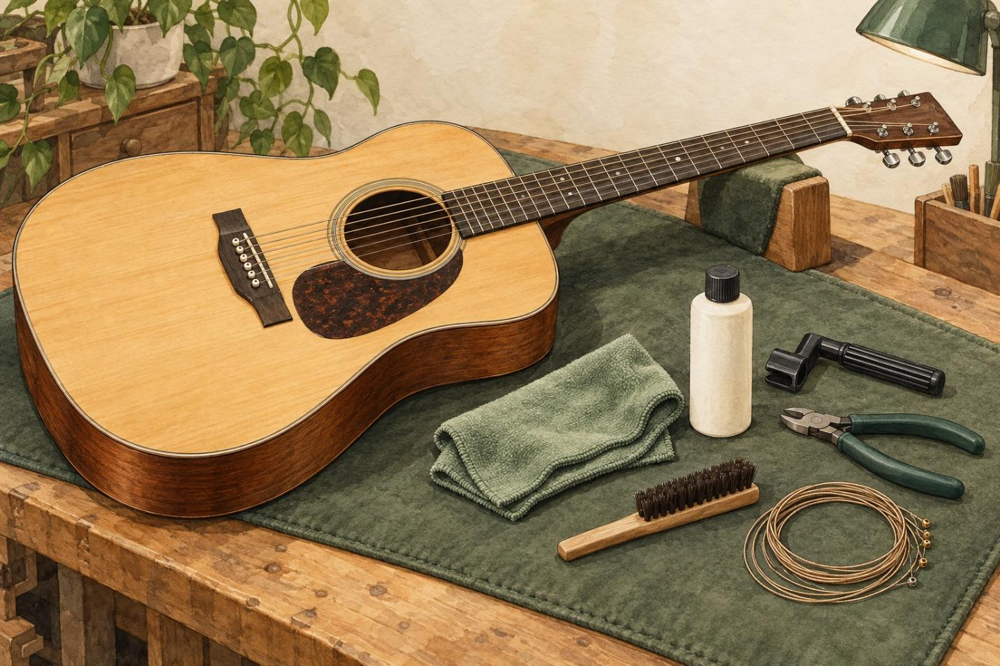
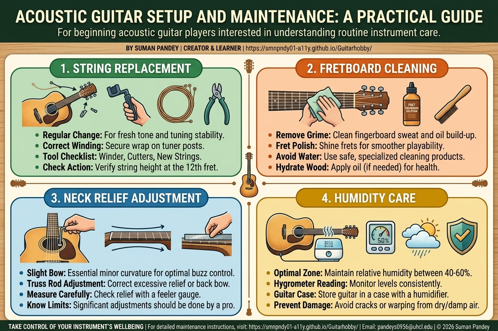

Acoustic Guitar Setup and Maintenance
Media Kit

Website FactSheet:
- Website name: Acoustic Guitar Setup and Maintenance
- Creator: Suman Pandey
- Website: https://smnpndy01-a11y.github.io/Guitarhobby/
- Primary audience: Beginning acoustic guitar players interested in understanding routine instrument care.
- Purpose: To explain guitar setup and maintenance through accessible information, practical instructions, and tool comparisons.
- Main topics: String replacement, fretboard cleaning, neck relief, string action, and humidity.
- Email: pandeys0956@uhcl.edu
Website Background
Acoustic Guitar Setup and Maintenance is an educational site that is made to make guitar maintenance easier to comprehend. With low-level players, it can be easier to get a feel for the instrument’s needs than to know what tools are available and where to begin. The site consolidates maintenance information and buying advice.
The site aims to provide easy-to-understand explanations for readers who might not be knowledgeable about the terminology used for a guitar. The aim is to make players aware of their instruments and care them in a thoughtful manner. It also acknowledges that there are some issues which should be assessed by a certified guitar technician.
Creator Biography
I am Suman Pandey, and I am the creator of Acoustic Guitar Setup and Maintenance. I have been playing guitar for over 3 years. In the process, I have learned how to change strings, clean the fretboard and frets, adjust the neck relief, and set up the guitar.
I have been interested in this project to gain insight into the experience of playing a game while performing maintenance. When you are new to the trade, it can be daunting to learn about the tools and adjustments that go with it. I have developed this website to provide an approachable way to share what I have learned as a player.
I am a learner and guitarist and write from that perspective. I intend to offer some clear beginnings and tips to readers on how to identify that they need more support.
A Practical Introduction to Acoustic Guitar Care
Acoustic Guitar Setup and Maintenance is an introduction to the tools, terms, and procedures needed for the beginning player to maintain an acoustic guitar. The website has been developed by Suman Pandey, which showcases educational writing and resource information.
The subjects covered on the site are changing strings, cleaning the fretboard, understanding neck relief, and considering humidity when storing an instrument. The subjects covered relate maintenance decisions to the condition and playability of guitars.
There is a buyer’s guide, which is a comparison of guitar-care kits, to ensure that the reader understands the differences in tools included and the purpose for each. More information about the project and an introduction to maintenance concepts are provided in the other items on the website.
You can learn more about the resources that are available by visiting the website:
https://smnpndy01-a11y.github.io/Guitarhobby/

Resource Overview
Buyer’s Guide: Guitar-Care Kits
The buyer’s guide is a comparison of the MusicNomad MN140, MN108, and MN299 kits. It takes into account the contents, intended use, and usefulness as a beginner. The comparison enables the reader to recognise the difference between cleaning products and string replacement tools.
Maintenance Newsletter
The newsletter teaches readers about the need to take care of their guitar on a regular basis. Helps new players focus on cleaning and storage conditions and to seek further information.
Maintenance Instructions
Selected maintenance tasks will be clearly sequenced in the planned instruction materials. They will identify the required tools, define unfamiliar terms, and state appropriate precautions. The topics will be centered on the work for the beginning learner, so as to help them understand the work before they attempt it.
About the Website
Acoustic Guitar Setup and Maintenance was created to help beginners feel more confident caring for their instruments. The website brings together practical explanations of routine maintenance, guidance on common setup terms, and comparisons of guitar-care tools. Its beginner-focused approach draws on the creator’s experience as a guitarist. The goal is to help readers recognize routine care needs while understanding when a qualified guitar technician is the better choice.
Works Cited
OpenAI. Acoustic Guitar Maintenance Kit. AI-generated image, 07 Oct. 2026, ChatGPT.
Google. Infographic for Acoustic Guitar Setup and Maintenance, 16 Oct. 2026, Gemini.